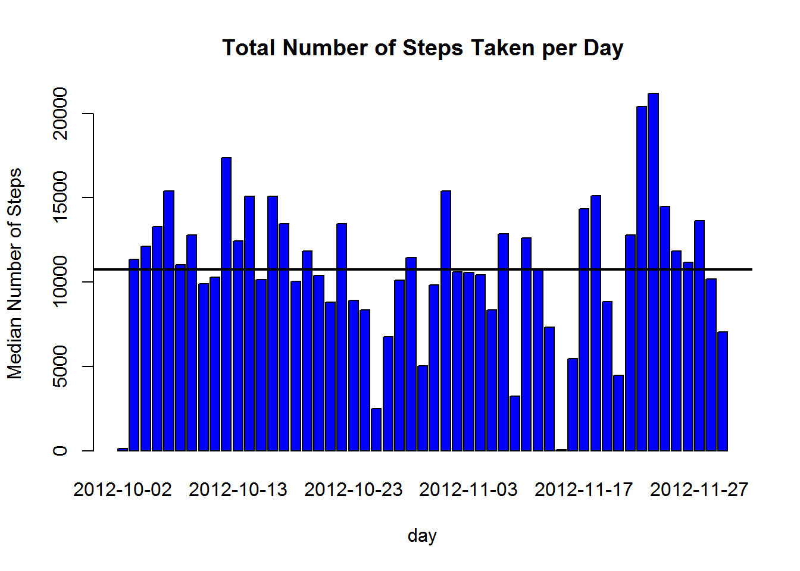

Loading and preprocessing the data and necessary package
library(knitr)## Warning: package 'knitr' was built under R version 3.2.2activity <- "./activity.csv"
activity_data <- read.table(activity, header=TRUE, sep=",", stringsAsFactors=FALSE, dec=".")
activity_data$date <- as.Date(activity_data$date, "%Y-%m-%d")Mean total number of steps taken per day
MeanByDay <- aggregate(steps ~ date, activity_data, mean)
barplot(height=MeanByDay$steps, names.arg=MeanByDay$date, xlab="day", ylab="Average Number of Steps",main="Average Total Number of Steps Taken per Day")Sum, mean, median number of steps taken per day
SumByDay <- aggregate(steps ~ date, activity_data, sum)
barplot(height=SumByDay$steps, names.arg=SumByDay$date, xlab="day", ylab="Median Number of Steps",main="Total Number of Steps Taken per Day",col="blue")
mean(SumByDay$steps)## [1] 10766.19median(SumByDay$steps)## [1] 10765max_steps <- max(activity_data$steps,na.rm=TRUE)
abline(h=mean(SumByDay$steps, na.rm=TRUE), col="orange", lwd=2)
abline(h=median(SumByDay$steps, na.rm=TRUE), col="black", lwd=2) Return interval with maximum steps
na.omit(activity_data[activity_data$steps==max(activity_data$steps,na.rm=TRUE),])## steps date interval
## 16492 806 2012-11-27 615Rows with NA
sum(is.na(activity_data))## [1] 2304Replace NA with Mean
MeanByInterval <- aggregate(steps ~ interval, activity_data, mean)
actMerge <- merge(activity_data, MeanByInterval, by="interval", suffixes=c(".act", ".mn"))
act_mss_rep<-activity_data
act_mss_rep[which(is.na(act_mss_rep$steps)),"steps"] <- actMerge[which(is.na(act_mss_rep$steps)),"steps.mn"]Sum, mean, median number of steps taken per day - Non-Missing Steps
SumByDayNoMss <- aggregate(steps ~ date, act_mss_rep, sum)
barplot(height=SumByDayNoMss$steps, names.arg=SumByDayNoMss$date, xlab="day", ylab="Median Number of Steps",main="Total Number of Steps Taken per Day (Non-Missing Steps)",col="blue")
mean(SumByDayNoMss$steps)## [1] 10889.8median(SumByDayNoMss$steps)## [1] 11015abline(h=mean(SumByDayNoMss$steps, na.rm=TRUE), col="orange", lwd=2)
abline(h=median(SumByDayNoMss$steps, na.rm=TRUE), col="black", lwd=2)Steps by Interval - Weekday vs Weekend
act_mss_rep$weekdays <-weekdays(act_mss_rep$date)
MeanByIntNoMssWknd <- aggregate(steps ~ interval, act_mss_rep[act_mss_rep$weekdays %in% c("Saturday","Sunday"),], mean)
MeanByIntNoMssWkdy <- aggregate(steps ~ interval, act_mss_rep[!(act_mss_rep$weekdays %in% c("Saturday","Sunday")),], mean)
par(mfrow=c(2,1))
plot(MeanByIntNoMssWknd$interval, MeanByIntNoMssWknd$steps, type="l", col="orange",main="Weekend",xlab="Interval",ylab="Average Num of Steps")
plot(MeanByIntNoMssWkdy$interval, MeanByIntNoMssWkdy$steps, type="l", col="black",main="Weekday",xlab="Interval",ylab="Average Num of Steps")